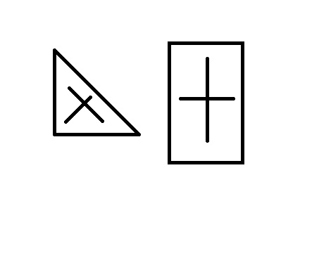
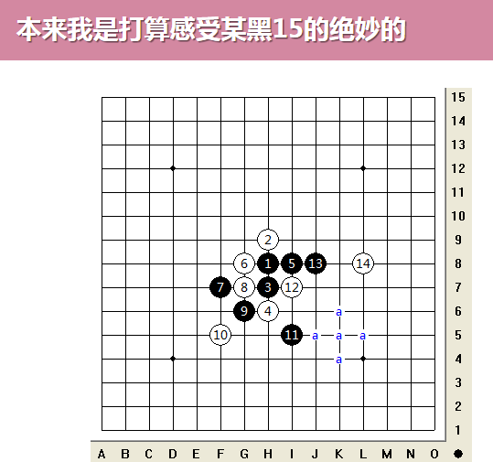
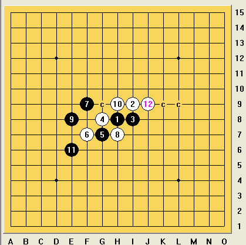

五子棋通用做棋法九式
#1 五子棋通用做棋法九式作者：厦门小天 发表时间：2014-11-4 0:46:44
虽然下了这么多年棋，也写了厚厚一本书，对五子棋还多少有些自信~~ 却不想被妹子的一个普通得不能再普通的问题考倒了！
这问题非常简单朴实——怎么做棋？
这问题从我初学时就遇到，但时至今日我才发现，我竟然无法给出一个让自己满意的答案。
基于某种的强迫症，我要给出一个至少看得过去的答案解答五子棋做棋的通用方法。
由于时间缘故一气呵成，有不妥之处望见谅，另发完前勿插楼。
［ 趁晨陈尘沉同学于 2014-11-4 11:37:35 时花20金币送鲜花一朵］
［ 趁晨陈尘沉同学于 2014-11-4 11:37:35 时花20金币送鲜花一朵］
［ 灯塔连珠同学于 2014-11-4 19:30:40 时花20金币送鲜花一朵］
［ 灯塔连珠同学于 2014-11-4 19:30:40 时花20金币送鲜花一朵］
［ 灯塔连珠同学于 2014-11-4 19:30:40 时花20金币送鲜花一朵］
［ 灯塔连珠同学于 2014-11-4 19:30:40 时花20金币送鲜花一朵］
［ 灯塔连珠同学于 2014-11-4 19:30:40 时花20金币送鲜花一朵］
［ 中中同学于 2014-11-29 9:33:15 时花20金币送鲜花一朵］
［ 中中同学于 2014-11-29 9:33:15 时花20金币送鲜花一朵］
［ 中中同学于 2014-11-29 9:33:15 时花20金币送鲜花一朵］
［ 中中同学于 2014-11-29 9:33:15 时花20金币送鲜花一朵］
［ 中中同学于 2014-11-29 9:33:15 时花20金币送鲜花一朵］
［ 中中同学于 2014-11-29 9:33:15 时花20金币送鲜花一朵］
［ 中中同学于 2014-11-29 9:33:15 时花20金币送鲜花一朵］
［ 中中同学于 2014-11-29 9:33:15 时花20金币送鲜花一朵］
［ 中中同学于 2014-11-29 9:33:15 时花20金币送鲜花一朵］
［ 中中同学于 2014-11-29 9:33:15 时花20金币送鲜花一朵］
#2 Re:五子棋通用做棋法九式作者：厦门小天 发表时间：2014-11-4 1:06:46
首先玩个文字游戏。什么叫做通用的做棋方法呢？
通用，简单说就是常用+实用+易上手的做棋方法，比如10盘棋能用到7、8盘的方法。通用的方法不等于所有方法，例如像松月那种几万盘出现不了一次的全盘做杀法绝对不在通用范围之内。因此切勿认为掌握通用方法就忽略更极限的妙手。
其次必须说明的是，本文做棋的选点方式只是帮助你找到攻击力比较强的点，或者说比较难防的进攻点，至于能否必胜由局面客观决定。假如局面客观就不存在必胜点，那任何技术都无法弥补，此时做棋就应转向考虑交换、求和、防守、待机、骗杀之类的策略问题。
最后呢，我们都知道五子棋进攻的基本必胜理论就是连接、空间、先手三大要素。本文将每种要素分3种情况考虑，成为做棋九式；每种做棋方式只在其对应的局面下最有效，因此要学会根据局面的需要来调整做棋的方式。（某种做棋方式在特定局面下效果最佳，但不等于不可以用在其他局面）
#3 Re:五子棋通用做棋法九式作者：厦门小天 发表时间：2014-11-4 2:22:59
Lion1：对比排除（最通用做棋法）
基本原理：无论做棋思路多么微妙，选点肯定是在棋盘的交叉点上，挨个对比排除过去总能找到……
排除、对比，虽然还无法证明必胜，但是得出9、10这一回合黑棋优势扩大了，这不证明这个9不错了吗？
SO，虽然7、8这一回合黑白优劣差不多，但（7、8）+（9、10）+（11、12）这N=3回合黑棋优势扩大了，这不证明了7、9、11可行？
以上是黑白、回合的横向对比，接着来看纵向对比。
例如你希望尝试下这个黑9，这时候需要把周围所有防点全部算一遍才能得出结论吗？ 当然如果你能耐心全部验算肯定是好的，但这里通常存在一个投机取巧的方法。就是你侧重验算5上跟7下两个防点即可——1个是原9默认的强防，另1个是原9的进攻点。
假设白10防5上边，那么你对比下【黑9在I5+黑11】，【跟黑9在J5+黑11】两个棋形，这样就不难看出前者攻击形状更强。
接着假设白10防7下边，然后感觉黑棋就不是很爽了~~ 可见J5这个点还不好给白棋，SO移形换位……
纵向对比就是先找出某个不错的黑9=J5，然后将其他黑9与9=J5对比，侧重对比10在5上（9=J5的强防）以及10=J5这两种情况。假如两种情况有一种黑无明显优势，那么就足以证明新黑9还不如原黑9=J5；假如两种情况都可以，那么最好再进一步验算一下其他白10防点。
小结：横向对比是黑/白的N回合的优势对比情况（新手可只考虑N=1），纵向对比是黑/黑在相同强防下的对比情况，优者保留劣者排除，前者用来证明某个黑点优势，后者用来证明某个黑点最优势。对比排除合起来其实就是黑石~~ 或者说五子棋软件的基本计算方法。
适用范围：假如计算力达到无限，那么本方法适用任何局面，但由于人脑计算力有限，因此这种方法主要用于进攻材料（连接）较充足的情况。毕竟进攻材料较充足时，防点可选范围小，人脑才能比较得过来。
补充：本做棋方法讲得非常简单、笼统~~ 这是有原因的，因为作为最核心的做棋方法，它拥有很多的简便运算技巧。方寸之间第一卷的大部分内容都属于本方法的简便运算，如移形换位、虎头蛇尾等。如果你能抓出“对比排除”这个核心方法，那么灵活运用各种技巧自然不在话下。
提醒：下棋只考虑自己，不考虑对方，是做棋弱的通病。什么叫考虑对方呢？比如你的黑9评50分，但对方白10只能评10分，那么你就净赚了40分；假如你的黑9评100分，但对方白10评90分，那么你只赚10分。那么你到底选50分的黑9，还是100分的黑9呢？这就叫自己强不如让对手弱，拓荒不如窝内斗！
最后，本方法用一句通俗的话概括就是，只要你能保证你的选点能比对方的选点产生更多的价值，那么你这棋是稳赚不赔的，保和争胜！
#4 Re:五子棋通用做棋法九式作者：厦门小天 发表时间：2014-11-4 3:03:38
Lion2：单头蛇，双头蛇
虎头虎尾书上有了就不细说了，简单说一个好的活2，应该是活三之后两头都有用的活2，也就是双头蛇。
比如这里G12、F12都能形成两个活2，选哪个好呢？ 这里你当然可以用Lion1的方法慢慢对比排除~~ 但这么模糊的局面用那招，算个半死是难免的。 其实这种棋看一眼基本就能确定F12比G12好，为什么呢？ 因为F12形成的两个活2都是双头蛇——它们活三后两头都有用；而G12其中一个活2是单头蛇
或许有人要问，做活二有这种讲究，那做眠三有没有？~~ 做眠3的技巧其实不能说没有，但个人感觉比较无规律，根据实际情况判断更有效。
小结：双活二的威力通常比较大，单头蛇的处理比较富有技巧，待机与跳三多见。
适用范围：进攻材料较少，可能防点范围较大，难以对比排除时。
#5 Re:五子棋通用做棋法九式作者：厦门小天 发表时间：2014-11-4 3:23:21
Lion3:异系做棋
前边两种情况是进攻材料较多，一般的情况；如果进攻材料再少呢？或者说进攻材料很零散呢？
书上关于异系做棋已经说得很详细的。简单说材料很少时做棋通常与白棋成马步或者直线贴着白棋。
黑19连接也不是很多啊，为什么选这？因为它与白18成马步，分析完毕！
本来至少该举个贴身直线的例子的…… 但实在想不出来，以后遇到再补上吧，罪过罪过。
小结：异系做棋原理不明，但目前看效果很不错。实战时，如果进攻材料实在少到不知道怎么做棋，参照此法常有奇效！（还是要结合其他理论技巧，灵活混用的）
适用范围：进攻材料少或者零散，进攻好点不明显时。
#6 Re:五子棋通用做棋法九式作者：厦门小天 发表时间：2014-11-4 3:47:07
扯完连接，接着就是空间。首先是不是考虑空间超充足的情况呢？~~ 假如空间超充足时，我们只会考虑连接跟先手，只有空间不足我们才会想到关于空间的技巧……
Space1：斜线拓展
在空间比较充足的情况下，做斜线确实是最有利于拓展的。这个已有实验支持证明，就不具体扯了。
适用范围：空间较充足时。
提醒下：这里的斜线拓展，只是说展开进攻的第一手，或者头几手采用做斜线（斜活2或眠三）的方式。后续进攻还是要阴阳结合的，千万别一斜到底。
#7 Re:五子棋通用做棋法九式作者：厦门小天 发表时间：2014-11-4 4:12:13
Space2：边角攻略
其实就是方寸的连珠地理学的内容~~ 很简单。
比如斜月右边展开进攻，由于右边的空间形状类似于长方形，因此选择横线或者竖线更容易充分利用空间（这里是角直线）。
至于松月下边的进攻，也是长方形的进攻形状，这里采用边直线进攻。
至于这个在角落里进攻，则采用角斜线。
这两个斜线例子空间还是比较大的，主要是进攻材料少需要消耗更多空间。
适用范围：空间较小或者材料不足需要消耗更多空间时。
提醒：选择直斜线的做棋都只局限于刚展开进攻的头1、2手，后续进攻依然要阴阳结合，切勿一直到底或者一斜到底。
原理：
 在三角形和长方形中，最容易充分利用空间资源的线，自然是如图那样的，很简单的几何原理。#8 Re:五子棋通用做棋法九式作者：厦门小天 发表时间：2014-11-4 4:21:29
Space3：正方形攻略
假如空间进一步缩小呢？ 其实空间到足够小的时候，能不能杀很大靠运气了。至于进攻的话，强烈推荐直线进攻。或许你会问，正方形下边，按照Space2的原理，直斜线不是一样的吗？~~ 这里参照连珠实验室的内容即可，简单说是在8*8的正方形空间里，白少一个子的情况下，直线必胜，斜线必胜不了，可见直线具有更强的小空间爆发力。
适用范围：更小的空间，类似正方形空间。
提醒：依然只是做棋第一手而已。
原理：直线具有更强的小空间爆发力。
空间做棋总结：空间做棋技巧核心原理都是用尽量少的子力得到尽量多的空间资源，因此需要根据空间的形态调整做棋的线路选择，但这里指的是进攻材料分布比较平均的时候。假如一边进攻材料丰富，另一边进攻材料稀少，那么做棋自然要偏向材料多的一边，切勿生搬硬套。
#9 Re:五子棋通用做棋法九式作者：厦门小天 发表时间：2014-11-4 4:40:43
讲完关于连接、空间的做棋，接下来就是先手了~~ 其实这些都是方寸里关于先手的内容，比较累了就不细述，简单说些常见的。
Force1:强反击做棋
当对方有强力反击时应如何做棋？ 这时做棋方式其实非常套路化啦。主要就3种：1、交换后做棋；2、直接复杂VCT、VCF强杀；3、防守、后中先。根据具体局面会选择最妥当的方式即可。
Force2：中反击做棋
这个大家最熟悉了，就是牵制啦。关于牵制的文章太多了，就提一点：一般是根据对方反击线路找牵制，特殊是先找自己进攻点，再验证该进攻点是否能实现牵制。
Force1：弱反击做棋
最核心的就是进攻形状的维护技巧，防止白棋可能的摧毁形状的着法。
关于先手的比较重要做棋技巧就讲到这~~ 其实还有简单干扰、无视做棋、攻守兼备、因势利导、穿越攻击之类的小技巧，就不细说了吧。
#10 Re:五子棋通用做棋法九式作者：厦门小天 发表时间：2014-11-4 4:45:47
没有提到的内容：
1，Force里边关于无视做棋的技巧，也就是完全不考虑反击专抢连接多的点，这点也能归入Lion1的衍生技巧。由于无视做棋足够常见因此特别提一下。
2、全盘联系、极限抢先、手割等等也是大家常常提到的技巧，但它实战并不足够常见（但一旦出现会非常精彩），因此不归入通用技巧。
3、补杀属于Lion1的衍生技巧。
4、…… 一时想不起来了，困死了……
#11 Re:五子棋通用做棋法九式作者：厦门小天 发表时间：2014-11-4 4:55:54
以上就是做棋的通用技巧，除了Lion1易学难精外，其他技巧还是比较一目了然的，这是我比较满意的地方。但是做棋真的是个很大很大的课题，未归入的非通用技巧，以及在无法必胜的情况下如何做棋，这个实在无力涉及，内容多到足够再写本书了！
我再次提醒大家。这些技巧至多只能帮助你提高一定的五子棋进攻力，让对手难以防住，仅此而已。除此外，它一不可能帮你实现必胜；二不可能将你的进攻力提升到极限（更精妙的做棋永远存在的，五子棋技术的极限未可知）；三是它很可能导致你攻崩。
所以，除了考虑提升做棋进攻力外，也应该考虑些中盘策略的东西。比如骗杀、误导就是我下棋最后阶段特别感兴趣的东西。
#12 Re:五子棋通用做棋法九式作者：厦门小天 发表时间：2014-11-4 5:01:03
再提一个：不同的做棋方式都有对应适合的局面，切勿用同一种做棋方式应对不同的局面，或者不根据实际情况硬要应用某种做棋方式。
假如某个局面同时涉及到空间跟连接的问题，可以先从空间角度思考做棋点，再从连接角度思考做棋点，最后取两者的交集，以此类推。
最后最后，用进废退，熟能生巧，身经百战自然能快速适应各种极端作战环境。
［ 暮雨迟同学于 2014-11-4 6:42:30 时花20金币送鲜花一朵］
［ 四川连珠魂同学于 2014-11-4 12:21:11 时花20金币送鲜花一朵］
［ 四川连珠魂同学于 2014-11-4 12:21:11 时花20金币送鲜花一朵］
［ 四川连珠魂同学于 2014-11-4 12:21:11 时花20金币送鲜花一朵］
#13 Re:五子棋通用做棋法九式作者：自来水 发表时间：2014-11-4 19:17:08


发个图试试
#14 Re:五子棋通用做棋法九式作者：自来水 发表时间：2014-11-4 19:35:37
谁成了马步，谁又能胜不能胜
#15 Re:五子棋通用做棋法九式作者：自来水 发表时间：2014-11-4 19:44:21
#16 Re:五子棋通用做棋法九式作者：自来水 发表时间：2014-11-4 20:01:33
关于对付八卦的非踩点、非斜线的技巧，楼上第一图也是个栗子
#17 Re:五子棋通用做棋法九式作者：厦门小天 发表时间：2014-11-4 20:51:35
1图松月可能记混淆了，印象某个分支是有个诡异做棋。
2图纯粹乱摆的确实不知道，如果是黑棋那形状肯定胜不了。
3图是有多个马步能胜，例子举的确有不妥。
后边直线扭2、3次是可以的，刚好成团角，原例直线是模仿斜线扭4次。
几年没碰棋一时想不到恰当的例子，一把老骨头了就别吐槽我了。不过还是感谢指正，如果可以的话，帮我编辑下或者修改重发一下吧。
#18 Re:五子棋通用做棋法九式作者：厦门小天 发表时间：2014-11-4 21:28:38
内个，你举的直线做棋例子都不达标。因为文中指的是材料少，无明显好点的情况，而你举得例子黑材料太多了#19 Re:五子棋通用做棋法九式作者：自来水 发表时间：2014-11-4 23:05:55
 你这条件是从哪冒出来的，
你这条件是从哪冒出来的，
话说你要是觉得黑材料多或者有明显好点
可以试试别的手法直接攻能不能胜。。
我看下来至少第一个图，只有这样去扭。。
#20 Re:五子棋通用做棋法九式作者：厦门小天 发表时间：2014-11-4 23:55:06
只有迷路了才需要指南针，只有局面模糊才参考马步。如果进攻材料多，用其他方法会更好，不需要用马步。
#21 Re:五子棋通用做棋法九式作者：自来水 发表时间：2014-11-5 9:56:31
我倒觉得:"能够走马步解决的那都是比较简单的局面,不能走马步的才叫艰难困苦"
不都是很简单的么..
这些不显然比较难嘛..
［此帖子已被 自来水 在 2014-11-5 10:00:25 编辑过］
#22 Re:五子棋通用做棋法九式作者：厦门小天 发表时间：2014-11-5 12:37:18
… 我们的论点根本不一样，我说的模糊是不直观的意思，但不一定是困难的。假如你有兴趣深究，+我Q详聊。#23 Re:五子棋通用做棋法九式作者：自来水 发表时间：2014-11-5 13:57:13
没打算深究,只是觉得问题挺多,新人一般看不懂,希望你解释得"通用"些...#24 Re:五子棋通用做棋法九式作者：厦门小天 发表时间：2014-11-5 14:11:53
-_-|| 如果是以前的我，肯定会想方设法把文字提炼完美，做到真正的“通用”，但你看看现在的我。1来几年没碰棋了，写点东西连素材都想不出来；2来工作忙，也没时间反复修改，熬了一夜也基本是我的极限了；3来我对五子棋的热情也基本燃烧殆尽了，你应该也看得出来越下到后边越写不下去了。
这篇文字呢，就如开题说得，我自己也只是觉得看得过去而已。只是想到大多棋手只关心具体怎么用，不关心细节之类的东西，所以也就在操作部分写得细些。当然能遇到像你这么细致的棋手实属幸事，而且你发的案例我一个都没见过（看来真是彻底落伍了），所以我想作为新一代优秀的棋手幸许能接接班，别让我这等老古董冲锋现阵了…
［ 天鹜同学于 2014-11-5 17:24:45 时花20金币送鲜花一朵］